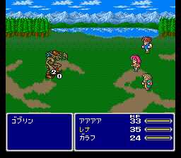

|

Review

Game Type: RPG
This is a traditional console RPG because it's part of the series that established the tradition. Battles are entirely menu-driven. Players use swords and sorcery to overcome random enemy encounters.
Gameplay: 90/100
Final Fantasy V is best described as a cross between FF2 and FF3 (FF4 and FF6 in Japan). The graphics while exploring towns and the overworld are highly comparable to FF2, while many of the attacks and options in battles were first seen here in FF3.
The main difference from its prequel and sequel is the ability for any character to change to any class at any time they please. Some, such as the thief, black mage, and red mage are familiar, while others such as the time mage or samurai have never been seen before or since. Each class has its own special abilities which individual characters use better the more they fight in that class. Each character has their own outfit for each profession, as well, so while there are actually only four characters it can seem like a cast of thousands at times.
FF5 has more techniques and spells available than even FF3, indeed probably more than any other Square RPG yet released. You never need to fight a battle the same way twice.
Graphics: 80/100
About the same graphics quality and style as FF2. Early on FF5 puts much more emphasis on forests and greenery, however, which I'm partial to. The spell effects are nowhere near as cool as the latest Square games, unfortunately. Not a visual marvel, but the style is very appealing.
Sound: 70/100
Although the tunes are pretty good overall, FF5 doesn't come even close to matching the beautiful Secret of Mana or even FF3. The sound effects are pretty much on par with other Square games.
Overall: 90/100
Okay, so I can understand why Square chose to bring over FF3 and Chrono Trigger instead of FF5. They have incredible visuals and awesome music. It's just too bad we couldn't have Final Fantasy V as well, since it offers far more variety and depth of gameplay than any other Square game to date. I hate missing out on the storyline. But if you're like me you might actually have fun slogging through the Japanese menu text, and if so I highly recommend importing it, as your efforts will be greatly rewarded.
|